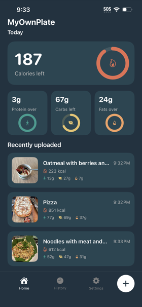
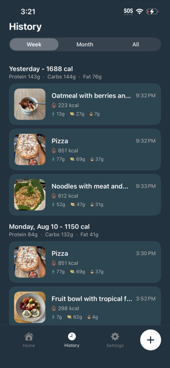
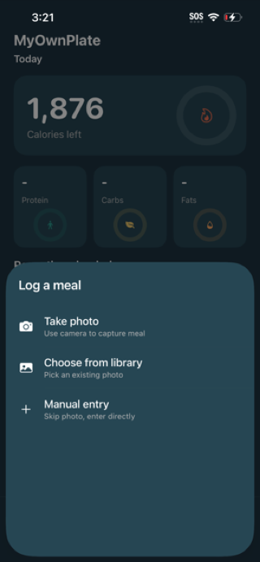
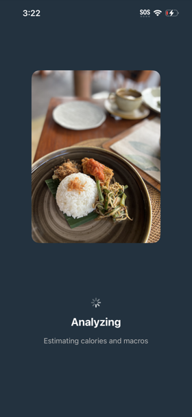
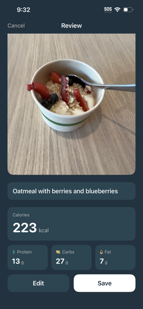

MyOwnPlate
MyOwnPlate is an iOS app where you can track calories and macros of your meals using AI. You upload a photo of a meal, and then an AI model running locally in the app can estimate the calories and macros. You can check it out on Testflight, and also see the code on GitHub.


You can log a meal by taking a photo directly in the app or uploading an existing photo. After a photo is uploaded, the model will come up with a natural language description of what food is in the photo, as well as an estimation of calorie / macro counts.



This project was greatly inspired by Ambrosia, which showed me how capable LLM’s that are small enough to run on an iPhone can be. I wanted to see if I could do something, for a different consumer problem. The use case of taking photos and using AI to estimate calorie counts was pretty well established by CalAI and others, and I was curious if a fine-tuned LLM running locally would be capable enough to solve this problem. (TL;DR: yes!)
This was my general approach:
- Find a large well-labeled food dataset to train against
- Identify an open source multi-modal base language model that is small enough to run on an iPhone
- Use the food dataset to generate a fine-tuned model that is more capable at identifying nutritional information than the base model
- Quantize the fine-tuned model into something small enough to reasonably fit in an iOS app, hopefully with minimal quality loss
Base model
The base model I used is Qwen3-VL-2B-Instruct, which is a multimodal (accepts images and text input) model. This is the same base model that Ambrosia used, which showed a fine-tuned flavor of this base model could run on an iOS app. Seemed reasonable to just use the same base model.
Ideally, Apple would offer a multimodal base model that all app developers could use. The Foundation Models framework allows developers to access a local text-input-only base language model. Developers can bake small LoRA adapters into their iOS apps, which allows you to ship iOS apps that have domain-specific behavior while only incorporating the LoRA adapters into the app binary instead of the base model and the LoRA adapters. If Apple provided a multimodal model at the OS level, my app would be anywhere from 200 to 600MB instead of 1.8GB.
Prepping training data
I decided to use the Nutrition5k dataset, which is a labeled food dataset open sourced by Google that has images of food labeled with calories, protein, fat and carbs. While looking more deeply through the Nutrition5k dataset, I found that most dishes had one image, but some had two or more. To prevent any data leakage, I split the Nutrition5k dataset at the dish ID level, to ensure that all camera angles of the same dish would go to the same split. I did a standard split of 80% training (~3500 meals), 10% validation (349 meals), 10% test (349 meals).
I set up a data processing script that parsed the CSV data from the Nutrition5k dataset and generated a JSONL file for each data split containing a dish ID, reference to image(s), and all nutrition data (calories, fat, protein, carbs).
Fine-tuning
I started with Qwen3-VL-2B-Instruct, and I wanted to teach it how to better estimate calories, protein, fat and carbs from my food dataset. Since my compute budget is limited to a Macbook Pro with an M2 chip, fine-tuning with LoRA adapters is the only reasonable way to train a model for a specialized task. Instead of running a full fine-tune to alter the base model’s parameters while training on the Nutrition5k dataset, I chose to have my training generate LoRA adapters instead. When using LoRA adapters, each step of training alters parameters on the adapter matrices instead of altering parameters on the base model.
I first set up a basic training script to naively generate fine-tuned LoRA adapters against the Nutrition5k dataset. I then set up an autoresearch loop that would experiment changing some parameters, re-run training, and then commit the change if it improved the model's performance.
During each training experiment, we trained on the 80% of the dataset that was in the "training" split. Once the training run completed, then we evaluated for correctness on the 10% of the dataset in the "validation" split. If the model improved with that experiment's config change, then we kept it. Otherwise, we discarded it and started a new experiment.
For reference for those who may want to attempt this at home, prior to this project, I had close to zero experience with training or fine-tuning models. All experiment ideas were proposed by Claude; I just gave it the Nutrition5k dataset as a hill to climb. A more experienced machine learning engineer may have been able to set up a less naive base training script or realize before training runs that some of the Claude-proposed ideas would go nowhere.
Luckily, the neat thing about fine-tuning an LLM that is small enough to run inference on an iPhone is that you can also train it on consumer hardware. I ran the full autoresearch loop on a Macbook Pro. This meant that the cost of a bad experiment was just time spent on training.
Running inference on iOS
Originally, I ran the fine-tuning using mlx-vlm, which I thought would have been the simplest path for exporting and running inference on an iOS app with Apple MLX. Unfortunately, once I actually exported the fine-tuned model to an iOS app, I found that even after quantizing the MLX model down to 1-bit, I wasn’t able to run the app using Apple MLX for inference without running into OOM issues.
I then decided to look into using llama.cpp for inference, which requires working with a GGUF model, not an MLX model. But I found that I could not reliably convert the model from MLX to GGUF without significantly degrading the accuracy of the model.
After several failed attempts converting the fine-tuned MLX model to GGUF, I decided it would make more sense to train in the same ecosystem I planned to deploy from. This meant restarting training from scratch using HuggingFace transformers and Parameter-Efficient Fine-Tuning. The HF format that the model is in after training is concluded can be exported to GGUF for on-device inference with minimal loss. After converting it to GGUF, I quantized the model down to 4-bit (Q4_K_M, specifically), which is the final version of the model that gets loaded into the app.
| Nutrient | HF adapters (FP16) | GGUF (FP16) | GGUF (Q4_K_M) |
|---|---|---|---|
| Calories MAE* | 13.6% | 17.2% | 15.7% |
| Protein MAE* | 15.2% | 20.4% | 18.2% |
| Fat MAE* | 19.9% | 23.2% | 23.5% |
| Carbs MAE* | 16.9% | 19.7% | 19.7% |
| Avg MAE* | 16.4% | 20.1% | 19.3% |
* Mean absolute error (MAE) as a percentage of that field.
I had looked at using RunAnywhere, which is what Ambrosia uses for inference. RunAnywhere may have some performance improvements compared to llama.cpp, but I decided to use llama.cpp instead because it’s been around a bit longer and has a more generous open source license.
Evaluating model performance
To benchmark my model, I evaluated everything against the "test" split of the Nutrition5k dataset, by looking at the mean absolute error as a percentage of how far off my model's prediction was from the correct values. This matches the dataset and methodology used in Google's Nutrition5k research paper. My goal was to beat Google’s Nutrition5k model, though I was kind of surprised it actually did!
| Nutrient | Qwen3-VL-2B | Fine-tuned model | Nutrition5k |
|---|---|---|---|
| Calories MAE* | 50.7% | 15.7% | 26.1% |
| Protein MAE* | 53.5% | 18.2% | 29.5% |
| Fat MAE* | 68.8% | 23.5% | 34.2% |
| Carbs MAE* | 83.9% | 19.7% | 31.9% |
| Avg MAE* | 64.2% | 19.3% | 30.4% |
* Mean absolute error (MAE) as a percentage of that field.
Fine-tuning considerably improved performance over the base model. It’s also worth noting that according to Section 4.6 of the research paper behind Nutrition5k, regular humans have an average MAE% of 53%, and professional nutritionists 41%. While no AI tool will ever be as accurate as meticulously measuring food to compute macros, it can pretty clearly outperform even professional humans.
Closing thoughts
- The app’s binary size could probably be smaller. My primary goal was to get out a working MVP that could run on an iPhone without crashing. But more investigative work could be done to reduce the app’s binary size, ex: quantizing the model down further or integrating with Apple’s OS-level LLM for the text-portion of the model.
- The version of the app that’s on TestFlight is a pretty bare-bones MVP. Before publishing it on the App Store, I’d like to polish it up a bit and add features like Apple Health integration or barcode scanning to give it feature parity with competitors.
- The conventional wisdom seems to be that there are few consumer AI use cases that consumers are also willing to pay for to cover the high inference costs. But if fine-tuned local models can be capable of solving (at least some) consumer use cases, then that really changes the economics of consumer AI.
Overall, I’m pretty happy with how the project came out! I learned a ton, and it’s cool that fine-tuning an open source LLM on a consumer Macbook is able to generate a model that’s more effective than what ~5 years ago would take a full research team, and has the added benefit of being runnable on a consumer iPhone.